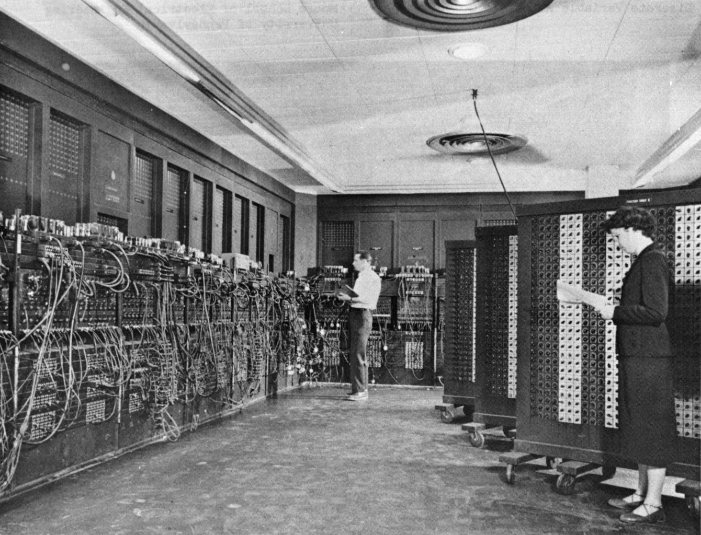

There is a pattern I keep noticing in the history of technology. Something arrives and makes a hard problem easy. For a while it feels as though we have arrived somewhere final. Then something else comes along and the ground moves again.
The printing press made information far easier to reproduce. The telegraph and the telephone collapsed distance. Computers made calculation and processing cheap. The internet made distribution almost free. Smartphones put all of it in a pocket. And now AI is making some kinds of intellectual work dramatically easier.
The question I find interesting is not whether AI is the final step. It almost certainly isn't. The more interesting one is what happens when intelligence itself becomes cheap.
I don't mean that human intelligence becomes worth less. I mean that tasks which used to require a person to spend hours thinking, writing, analysing or drafting can increasingly be handed to a machine. Ask a question, get an explanation. Describe an idea, get a draft. Describe a program, get code. Hand over data, get an analysis. The cost of producing a certain kind of intellectual output is falling.
But history suggests something worth holding onto. When a technology makes one thing easier, it rarely makes everything easier. It moves the bottleneck.
Take the printing press. Before it, producing another copy of a book was the hard part. Printing solved that — and immediately a different problem mattered more: how do you get thousands of copies to people? Distribution became the constraint, and the next few centuries of communication technology went to work on it.
The internet finished that job. Information could travel anywhere, instantly, at almost no cost. Which created the problem we actually have: there is far more of it than anyone can read. The difficulty moved again — from getting access to information to finding what is useful, deciding what deserves attention, and working out what to trust.
AI may be doing the same thing to intellectual production. If generating an answer becomes cheap, then generating answers is no longer the hard part.
So what is? I can think of three candidates.
Knowing what is true
A model can produce an answer in seconds. But an answer is not the same thing as a true one, and a convincing explanation can still be wrong. The more information machines produce, the more the ability to check it matters.
The question shifts from can we produce an answer? to how do we know this one is right?

Turning intelligence into action
Suppose a system produces a genuinely good design for a new battery. The design does not build itself. Someone still has to make the materials, build a prototype, run the experiment and take the measurements. The same holds for a drug, a machine, a building, a business.
AI can make the thinking faster. The physical world still has friction. An idea has to become a thing that exists. So intelligence may well become cheap long before execution does.
Deciding what is worth doing
This one seems hardest. Imagine a system that can generate thousands of plausible solutions to almost any problem. Which do you pursue? Which problem should be solved at all? What deserves attention, who benefits, and what risks are acceptable?
More intelligence does not answer those questions. A machine can lay out possibilities, trace consequences and compare options. Deciding what matters is a different kind of problem.
A wall that moves
Which brings me back to the pattern. Maybe progress is not a line along which everything gradually gets easier. Maybe it is more like a wall that moves. We solve a hard problem, the wall shifts, and the difficulty reappears somewhere else.
The printing press moved it from reproducing information to distributing it. The internet moved it from distribution to filtering, attention and trust. AI may be moving it from producing intellectual work to verifying it, executing it, and deciding what is worth producing in the first place.
Which makes me wonder whether what will AI be able to do? is the wrong question, and what becomes important when AI can do so much? is the better one.
I don't know. But perhaps that is the point. Every generation gets its own version of the moment when a new technology makes the old limits look small. The Wright brothers' first flight lasted less than a minute; Gutenberg could not have imagined Ctrl+P. Neither could have seen what followed, and there is no particular reason to think we are better placed to see what follows this.
So the interesting part may not be what the machine eventually turns out to be able to do. It is what we decide to do once it can.